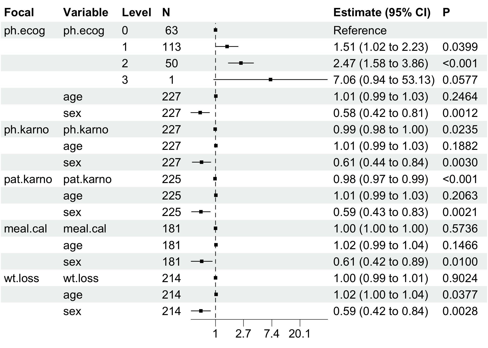
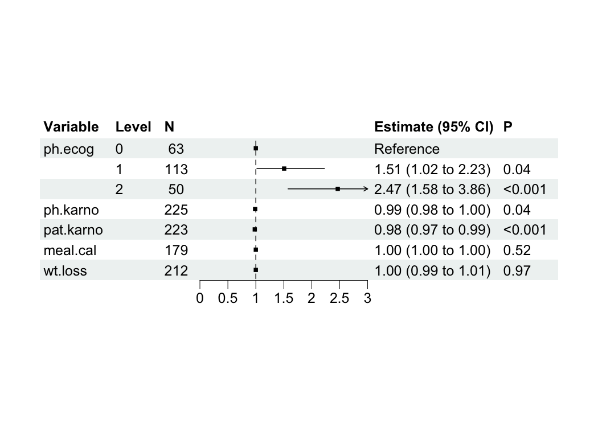

The bregr package revolutionizes batch regression modeling in R, enabling you to run hundreds of models simultaneously with a clean, intuitive workflow. Designed for both univariate and multivariate analyses, it delivers tidy-formatted results and publication-ready visualizations, transforming cumbersome statistical workflows into efficient pipelines.
Key Features
- 🚀 Batch Processing: Automate regression modeling across multiple dependent/independent variables.
- 📊 Tidy Output: Structured results compatible with
tidyversefor seamless downstream analysis. - 📈 Integrated Visualization: One-command forest plots and model diagnostics.
- ⚡️ Unified Workflow: Chain operations with native R pipes (
|>). - 📦 Model Agnostic: Supports linear models, Cox regression, and more.
Batch Regression Modeling Overview
Batch regression streamlines analyses where:
- Each model shares identical control variables (, , …).
- Focal predictors (, , …) or response variables (, , …) vary systematically.

Installation
You can install the stable version of bregr from CRAN with:
install.packages("bregr")You can install the development version of bregr from GitHub with:
# install.packages("pak")
pak::pak("WangLabCSU/bregr")Usage
Load package(s):
library(bregr)
#> Welcome to 'bregr' package!
#> =======================================================================
#> You are using bregr version 1.0.0
#>
#> Project home : https://github.com/WangLabCSU/bregr
#> Documentation: https://wanglabcsu.github.io/bregr/
#> Cite as : arXiv:2110.14232
#> =======================================================================
#> Load data:
bregr is designed and implemented following Tidy design principles and Tidyverse style guide, making it intuitive and user-friendly.
Core workflow
Define and construct batch models:
mds <- breg(lung) |> # Init breg object
br_set_y(c("time", "status")) |> # Survival outcomes
br_set_x(colnames(lung)[6:10]) |> # Focal predictors
br_set_x2(c("age", "sex")) |> # Controls
br_set_model("coxph") |> # Cox Proportional Hazards
br_run() # Execute models
#> set `exponentiate=TRUE` for model(s) constructed from coxph method at defaultOne-Step Pipeline
mds <- br_pipeline(
lung,
y = c("time", "status"),
x = colnames(lung)[6:10],
x2 = c("age", "sex"),
method = "coxph"
) Output Inspection
Use br_get_*() function family to access attributes and data of result breg object.
br_get_models(mds) # Raw model objects
#> $ph.ecog
#> Call:
#> survival::coxph(formula = survival::Surv(time, status) ~ ph.ecog +
#> age + sex, data = data)
#>
#> coef exp(coef) se(coef) z p
#> ph.ecog1 0.410048 1.506890 0.199604 2.054 0.03995
#> ph.ecog2 0.903303 2.467741 0.228078 3.960 7.48e-05
#> ph.ecog3 1.954543 7.060694 1.029701 1.898 0.05767
#> age 0.010795 1.010853 0.009312 1.159 0.24637
#> sex -0.545831 0.579360 0.168228 -3.245 0.00118
#>
#> Likelihood ratio test=30.87 on 5 df, p=9.952e-06
#> n= 227, number of events= 164
#> (1 observation deleted due to missingness)
#>
#> $ph.karno
#> Call:
#> survival::coxph(formula = survival::Surv(time, status) ~ ph.karno +
#> age + sex, data = data)
#>
#> coef exp(coef) se(coef) z p
#> ph.karno -0.013322 0.986767 0.005880 -2.266 0.02348
#> age 0.012375 1.012452 0.009405 1.316 0.18821
#> sex -0.497170 0.608249 0.167713 -2.964 0.00303
#>
#> Likelihood ratio test=18.81 on 3 df, p=0.0002987
#> n= 227, number of events= 164
#> (1 observation deleted due to missingness)
#>
#> $pat.karno
#> Call:
#> survival::coxph(formula = survival::Surv(time, status) ~ pat.karno +
#> age + sex, data = data)
#>
#> coef exp(coef) se(coef) z p
#> pat.karno -0.019061 0.981120 0.005638 -3.381 0.000722
#> age 0.011793 1.011863 0.009331 1.264 0.206269
#> sex -0.519262 0.594959 0.168967 -3.073 0.002118
#>
#> Likelihood ratio test=24.33 on 3 df, p=2.133e-05
#> n= 225, number of events= 162
#> (3 observations deleted due to missingness)
#>
#> $meal.cal
#> Call:
#> survival::coxph(formula = survival::Surv(time, status) ~ meal.cal +
#> age + sex, data = data)
#>
#> coef exp(coef) se(coef) z p
#> meal.cal -0.0001341 0.9998659 0.0002383 -0.563 0.574
#> age 0.0152942 1.0154117 0.0105352 1.452 0.147
#> sex -0.4914187 0.6117579 0.1908601 -2.575 0.010
#>
#> Likelihood ratio test=10.65 on 3 df, p=0.01376
#> n= 181, number of events= 134
#> (47 observations deleted due to missingness)
#>
#> $wt.loss
#> Call:
#> survival::coxph(formula = survival::Surv(time, status) ~ wt.loss +
#> age + sex, data = data)
#>
#> coef exp(coef) se(coef) z p
#> wt.loss 0.0007596 1.0007599 0.0061934 0.123 0.9024
#> age 0.0200882 1.0202913 0.0096644 2.079 0.0377
#> sex -0.5210319 0.5939074 0.1743541 -2.988 0.0028
#>
#> Likelihood ratio test=14.67 on 3 df, p=0.002122
#> n= 214, number of events= 152
#> (14 observations deleted due to missingness)
br_get_results(mds) # Comprehensive estimates
#> # A tibble: 18 × 21
#> Focal_variable term variable var_label var_class var_type var_nlevels
#> <chr> <chr> <chr> <chr> <chr> <chr> <int>
#> 1 ph.ecog ph.ecog0 ph.ecog ph.ecog factor categoric… 4
#> 2 ph.ecog ph.ecog1 ph.ecog ph.ecog factor categoric… 4
#> 3 ph.ecog ph.ecog2 ph.ecog ph.ecog factor categoric… 4
#> 4 ph.ecog ph.ecog3 ph.ecog ph.ecog factor categoric… 4
#> 5 ph.ecog age age age numeric continuous NA
#> 6 ph.ecog sex sex sex numeric continuous NA
#> 7 ph.karno ph.karno ph.karno ph.karno numeric continuous NA
#> 8 ph.karno age age age numeric continuous NA
#> 9 ph.karno sex sex sex numeric continuous NA
#> 10 pat.karno pat.karno pat.karno pat.karno numeric continuous NA
#> 11 pat.karno age age age numeric continuous NA
#> 12 pat.karno sex sex sex numeric continuous NA
#> 13 meal.cal meal.cal meal.cal meal.cal numeric continuous NA
#> 14 meal.cal age age age numeric continuous NA
#> 15 meal.cal sex sex sex numeric continuous NA
#> 16 wt.loss wt.loss wt.loss wt.loss numeric continuous NA
#> 17 wt.loss age age age numeric continuous NA
#> 18 wt.loss sex sex sex numeric continuous NA
#> # ℹ 14 more variables: contrasts <chr>, contrasts_type <chr>,
#> # reference_row <lgl>, label <chr>, n_obs <dbl>, n_ind <dbl>, n_event <dbl>,
#> # exposure <dbl>, estimate <dbl>, std.error <dbl>, statistic <dbl>,
#> # p.value <dbl>, conf.low <dbl>, conf.high <dbl>
br_get_results(mds, tidy = TRUE) # Tidy-formatted coefficients
#> # A tibble: 17 × 8
#> Focal_variable term estimate std.error statistic p.value conf.low conf.high
#> <chr> <chr> <dbl> <dbl> <dbl> <dbl> <dbl> <dbl>
#> 1 ph.ecog ph.ec… 1.51 0.200 2.05 3.99e-2 1.02 2.23
#> 2 ph.ecog ph.ec… 2.47 0.228 3.96 7.48e-5 1.58 3.86
#> 3 ph.ecog ph.ec… 7.06 1.03 1.90 5.77e-2 0.938 53.1
#> 4 ph.ecog age 1.01 0.00931 1.16 2.46e-1 0.993 1.03
#> 5 ph.ecog sex 0.579 0.168 -3.24 1.18e-3 0.417 0.806
#> 6 ph.karno ph.ka… 0.987 0.00588 -2.27 2.35e-2 0.975 0.998
#> 7 ph.karno age 1.01 0.00940 1.32 1.88e-1 0.994 1.03
#> 8 ph.karno sex 0.608 0.168 -2.96 3.03e-3 0.438 0.845
#> 9 pat.karno pat.k… 0.981 0.00564 -3.38 7.22e-4 0.970 0.992
#> 10 pat.karno age 1.01 0.00933 1.26 2.06e-1 0.994 1.03
#> 11 pat.karno sex 0.595 0.169 -3.07 2.12e-3 0.427 0.829
#> 12 meal.cal meal.… 1.00 0.000238 -0.563 5.74e-1 0.999 1.00
#> 13 meal.cal age 1.02 0.0105 1.45 1.47e-1 0.995 1.04
#> 14 meal.cal sex 0.612 0.191 -2.57 1.00e-2 0.421 0.889
#> 15 wt.loss wt.lo… 1.00 0.00619 0.123 9.02e-1 0.989 1.01
#> 16 wt.loss age 1.02 0.00966 2.08 3.77e-2 1.00 1.04
#> 17 wt.loss sex 0.594 0.174 -2.99 2.80e-3 0.422 0.836Visualization
Forest Plot (Key Results)
bregr mainly provides br_show_forest() for plotting data table of modeling results.
br_show_forest(mds)
We can tune the plot to only keep focal variables and adjust the limits of x axis.
br_show_forest(
mds,
rm_controls = TRUE, # Focus on focal predictors
xlim = c(0, 10), # Custom axis scaling
drop = 1 # Remove redundant columns
) 
We also provide some interfaces from other packages for plotting constructed model(s), e.g., br_show_forest_ggstats(), br_show_forest_ggstatsplot(), br_show_fitted_line(), and br_show_fitted_line_2d().
For Cox-PH modeling results (focal variables must be continuous type), we provide a risk network plotting function.
mds2 = br_pipeline(
survival::lung,
y = c("time", "status"),
x = colnames(survival::lung)[6:10],
x2 = c("age", "sex"),
method = "coxph"
)
#> set `exponentiate=TRUE` for model(s) constructed from coxph method at default
br_show_risk_network(mds2)
#> please note only continuous focal terms analyzed and visualized
Table
Show tidy table result as pretty table:
br_show_table(mds)
#> Focal_variable term estimate std.error statistic p.value conf.int
#> 1 ph.ecog ph.ecog1 1.51 0.20 2.05 0.040 [1.02, 2.23]
#> 2 ph.ecog ph.ecog2 2.47 0.23 3.96 < .001 [1.58, 3.86]
#> 3 ph.ecog ph.ecog3 7.06 1.03 1.90 0.058 [0.94, 53.13]
#> 4 ph.ecog age 1.01 9.31e-03 1.16 0.246 [0.99, 1.03]
#> 5 ph.ecog sex 0.58 0.17 -3.24 0.001 [0.42, 0.81]
#> 6 ph.karno ph.karno 0.99 5.88e-03 -2.27 0.023 [0.98, 1.00]
#> 7 ph.karno age 1.01 9.40e-03 1.32 0.188 [0.99, 1.03]
#> 8 ph.karno sex 0.61 0.17 -2.96 0.003 [0.44, 0.84]
#> 9 pat.karno pat.karno 0.98 5.64e-03 -3.38 < .001 [0.97, 0.99]
#> 10 pat.karno age 1.01 9.33e-03 1.26 0.206 [0.99, 1.03]
#> 11 pat.karno sex 0.59 0.17 -3.07 0.002 [0.43, 0.83]
#> 12 meal.cal meal.cal 1.00 2.38e-04 -0.56 0.574 [1.00, 1.00]
#> 13 meal.cal age 1.02 0.01 1.45 0.147 [0.99, 1.04]
#> 14 meal.cal sex 0.61 0.19 -2.57 0.010 [0.42, 0.89]
#> 15 wt.loss wt.loss 1.00 6.19e-03 0.12 0.902 [0.99, 1.01]
#> 16 wt.loss age 1.02 9.66e-03 2.08 0.038 [1.00, 1.04]
#> 17 wt.loss sex 0.59 0.17 -2.99 0.003 [0.42, 0.84]As markdown table:
br_show_table(mds, export = TRUE)
#> Focal_variable | term | estimate | std.error | statistic | p.value | conf.int
#> ---------------------------------------------------------------------------------------
#> ph.ecog | ph.ecog1 | 1.51 | 0.20 | 2.05 | 0.040 | [1.02, 2.23]
#> ph.ecog | ph.ecog2 | 2.47 | 0.23 | 3.96 | < .001 | [1.58, 3.86]
#> ph.ecog | ph.ecog3 | 7.06 | 1.03 | 1.90 | 0.058 | [0.94, 53.13]
#> ph.ecog | age | 1.01 | 9.31e-03 | 1.16 | 0.246 | [0.99, 1.03]
#> ph.ecog | sex | 0.58 | 0.17 | -3.24 | 0.001 | [0.42, 0.81]
#> ph.karno | ph.karno | 0.99 | 5.88e-03 | -2.27 | 0.023 | [0.98, 1.00]
#> ph.karno | age | 1.01 | 9.40e-03 | 1.32 | 0.188 | [0.99, 1.03]
#> ph.karno | sex | 0.61 | 0.17 | -2.96 | 0.003 | [0.44, 0.84]
#> pat.karno | pat.karno | 0.98 | 5.64e-03 | -3.38 | < .001 | [0.97, 0.99]
#> pat.karno | age | 1.01 | 9.33e-03 | 1.26 | 0.206 | [0.99, 1.03]
#> pat.karno | sex | 0.59 | 0.17 | -3.07 | 0.002 | [0.43, 0.83]
#> meal.cal | meal.cal | 1.00 | 2.38e-04 | -0.56 | 0.574 | [1.00, 1.00]
#> meal.cal | age | 1.02 | 0.01 | 1.45 | 0.147 | [0.99, 1.04]
#> meal.cal | sex | 0.61 | 0.19 | -2.57 | 0.010 | [0.42, 0.89]
#> wt.loss | wt.loss | 1.00 | 6.19e-03 | 0.12 | 0.902 | [0.99, 1.01]
#> wt.loss | age | 1.02 | 9.66e-03 | 2.08 | 0.038 | [1.00, 1.04]
#> wt.loss | sex | 0.59 | 0.17 | -2.99 | 0.003 | [0.42, 0.84]As HTML table:
br_show_table(mds, export = TRUE, args_table_export = list(format = "html"))Documentation
All functions are documented in the package reference, with full documentation available on the package site.
Coverage
covr::package_coverage()
#> bregr Coverage: 82.20%
#> R/98-utils.R: 41.03%
#> R/04-show.R: 80.39%
#> R/03-accessors.R: 82.86%
#> R/02-pipeline.R: 90.53%
#> R/99-zzz.R: 90.91%
#> R/05-polar.R: 96.61%
#> R/01-class.R: 100.00%
#> R/06-avail.R: 100.00%